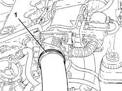
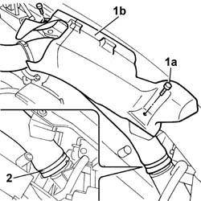
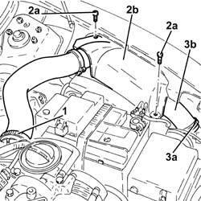

1048b22 air delivery sleeve from heat exchanger to intake manifold - r + r
- Path
- Procedures > 10 ENGINE > 1048 ENGINE AIR SUPPLY CIRCUIT > 1048B pressure air circuit > 1048b22 air delivery sleeve from heat exchanger to intake manifold - r + r
- Kind
- repair procedure (removal / refitting; the operation number is the code)
- Applies to
- engines: 1.9 JTD 8V, 1.9 JTD 16V; all production periods
- Interactive page
- https://sloeber94.github.io/elrnDB-a147/en/#/3025023
Applies to: engines: 1.9 JTD 8V; all production periods
 Removing
Removing
 Refitting
Refitting1. Disconnect the air deliver sleeve from the connector on the inlet manifold.

Applies to: engines: 1.9 JTD 8V; all production periods
1. Unscrew retaining bolts (1a) and remove plastic protection (1b).
2. Disconnect the air supply hose from the heat exchanger and remove.

Applies to: engines: 1.9 JTD 8V; all production periods
Refitting
RemovingFit the air supply hose and connect to the heat exchanger and the connection on the inlet manifold.
Fit the plastic protection and tighten the bolts.
Applies to: engines: 1.9 JTD 16V; all production periods
Removing
RefittingProceed with removal 7025A12 Engine front sound insulation COVER - R.R. .
Proceed with removal 7025A14 Bonnet LID - R.R. .
Proceed with removal 1016A10 sound-proofing cover - r + r .
1. Loosen the band and disconnect the air supply hose from the heat exchanger to the inlet manifold, connector side on the throttle body.
2. Undo the bolts (2a) and remove the protection (2b).
3. Loosen the band (3a) and disconnect the air supply duct from heat exchanger to inlet manifold (3b), heat exchanger side and remove it.

Applies to: engines: 1.9 JTD 16V; all production periods
Refitting
RemovingRefit in its seating the air supply duct from heat exchanger to inlet manifold, connect it to the heat exchanger and tighten the relevant band.
Place the protection back in its housing and secure it using the bolt.
Connect the air supply hose from the heat exchanger to the inlet manifold, throttle body connector side, and tighten the band.
Proceed with refitting 1016A10 sound-proofing cover - r + r .
Proceed with refitting 7025A14 Bonnet LID - R.R. .
Proceed with refitting 7025A12 Engine front sound insulation COVER - R.R. .